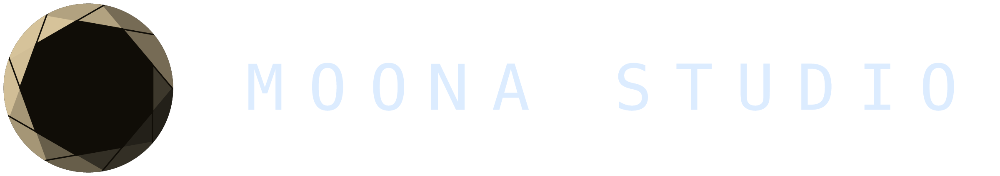
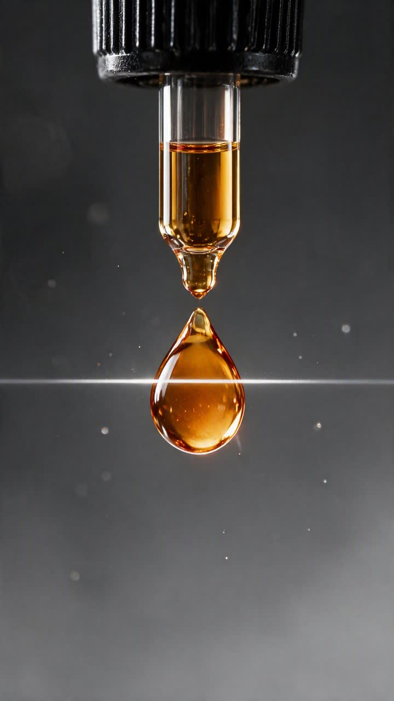
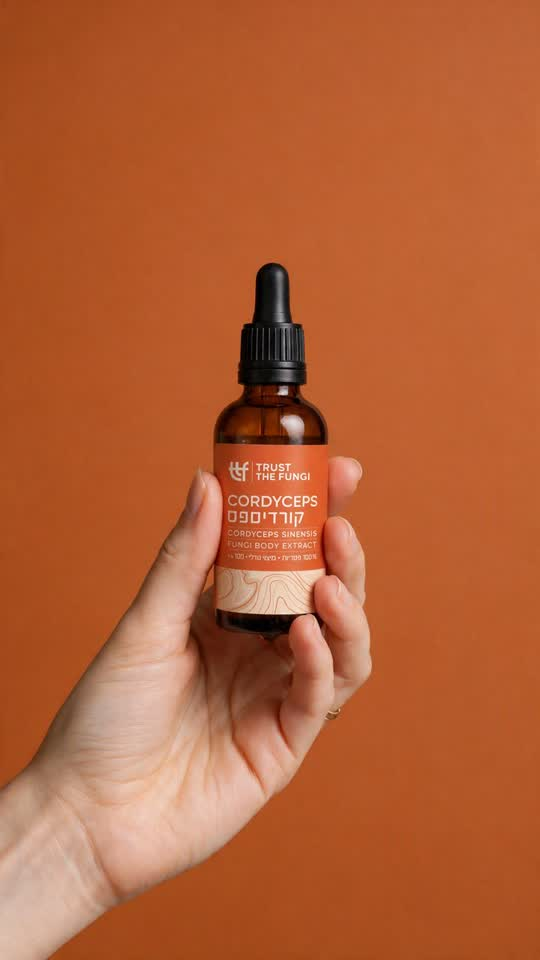
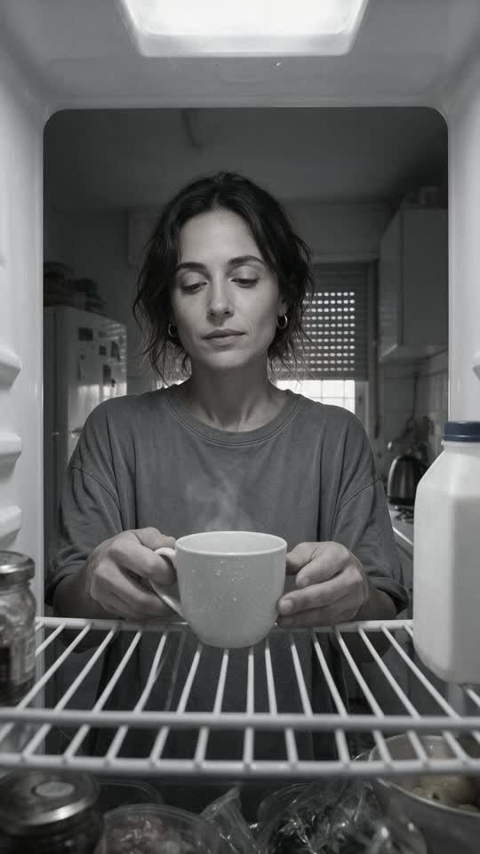
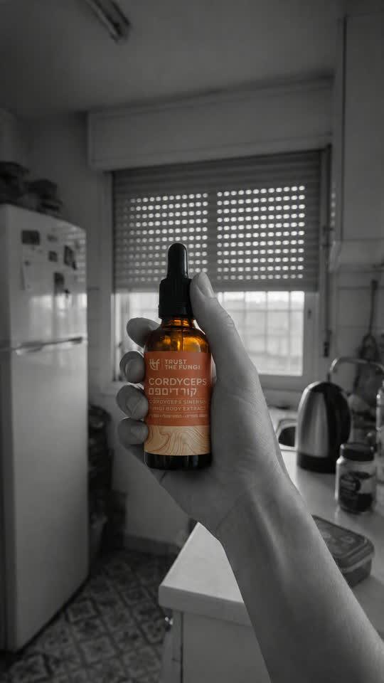
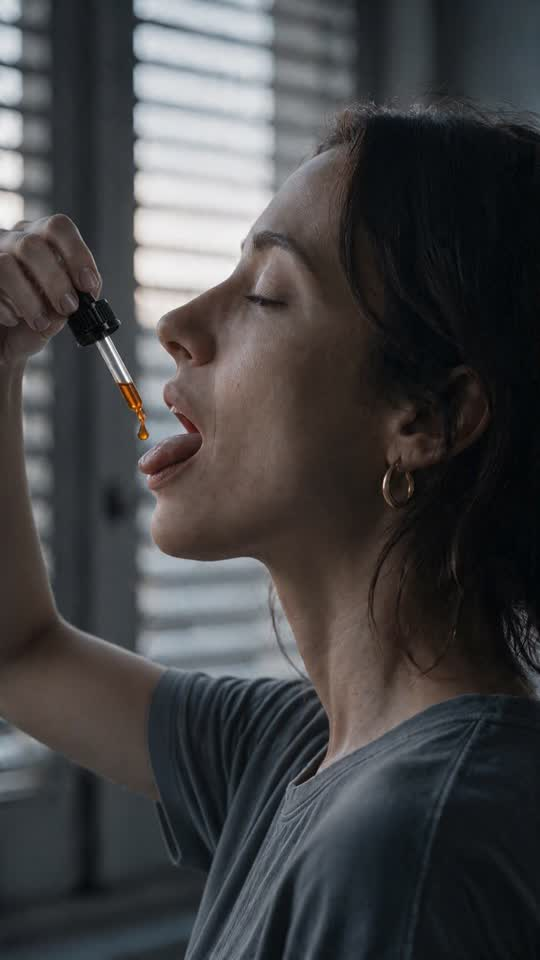
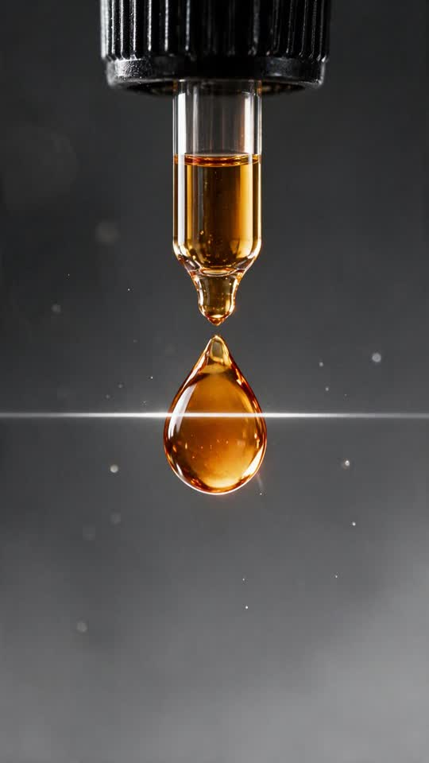
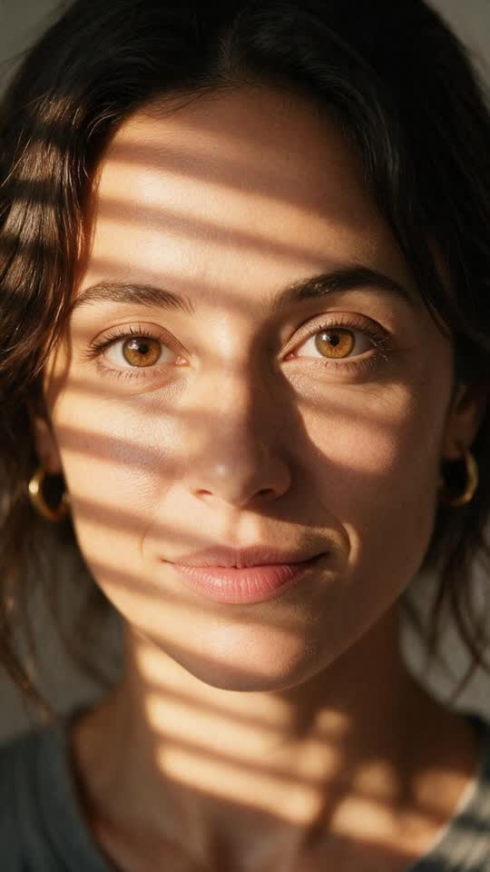
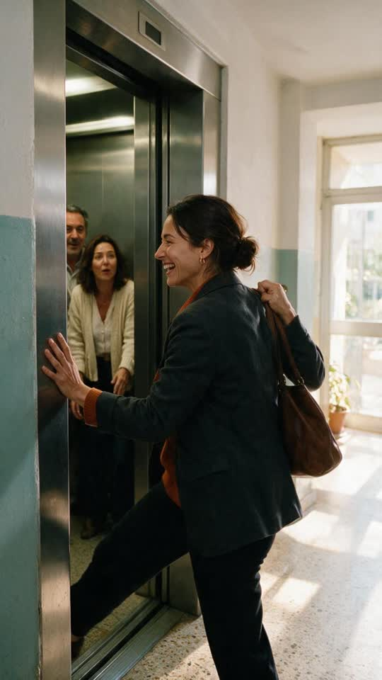

המסע: סרטון למיצוי הנוזלי של הקורדיספס
לריל ולסטוריז, בעברית, עם הבקבוק שלכם בפריים.
טיפה שנבדקה היא טיפה שאפשר לסמוך עליה.
כולם אומרים "100% גופי פרי". לכם יש מה להראות.
רוב המותגים בקטגוריה מבטיחים אותו דבר. אצלכם יש דוח מעבדה פתוח ו־30.3% בטא־גלוקנים, ואת זה אפשר לראות.
בסרטון, הטיפה עוצרת באוויר ונבדקת לפני שהיא נכנסת. ככה ה־Trust בשם שלכם הופך לרגע שרואים בעיניים, ושנשאר בראש.

מבוקר אפור לבוקר שהיא באמת שם, דרך טיפה אחת שנבדקת.

הכל אפור. היא מכניסה את הקפה למקרר.
על המסך09:30. הקפה במקרר. שוב.

היא מרימה את בקבוק הקורדיספס, הצבע היחיד בחדר.

היא מקרבת את הטפטפת לפה, עיניים עצומות.

טיפה אחת עוצרת באוויר, קו סריקה עובר עליה, והמספר ננעל.
הטיפה נכנסת ונמסה לאור זהוב שמתפשט בתוכה, עד קצות האצבעות.
האור קופץ מנקודה לנקודה ומדליק אותה מבפנים, צעד אחר צעד.

היא פוקחת עיניים, והעולם חוזר לצבע.

מלאת אנרגיה, תופסת את המעלית בשנייה האחרונה וצוחקת.
על המסך"רמת האנרגיה והריכוז נשמרים אחידים לאורך כל היום." · מתוך ביקורת באתר שלכם
אחר הצהריים, והאנרגיה שלה עדיין שם. העמית לידה מפהק, ועדיין קצת אפור.
הבקבוק שלכם ביד, על הכתום של התווית.
על המסךנבדק לפני שנכנס.
שלוש דוגמאות שהכנו למותגים ישראליים, מתמונות המוצר שלהם.
המוצר במרכז, בצבעים שלו. טקסט קצר בעברית, והלוגו בסוף.
מקרו על הבד, יד אנושית ואור חלון רך. רגע שקט שמרגישים דרך המסך.
רגע אחד שמראה מה המוצר עושה, בלי מילים מיותרות. מים, אור ותנועה.
חלק מהעבודות עדיין בתהליך מול המותגים.
9:16, לריל ולסטוריז. טקסט בעברית, סאונד ומוזיקה.
שלוש גרסאות לשנייה הראשונה של אותו סרטון, כדי לבדוק בקמפיין מה עוצר הכי הרבה אנשים.
הפריימים בעמוד הזה הם הדמיה של הרעיון. הדמות, המקומות והרפרנסים יכולים להשתנות ולהשתדרג בהפקה, יחד איתכם.
הבקבוק, הפיפטה מחוץ לבקבוק וטיפה מהתמצית, באיכות גבוהה.
הנתונים ומשפטי המפתח שחשוב לכם שיופיעו בסרטון.
אישור להשתמש בציטוט מהביקורת, עם שם או בלי.
קבצי לוגו וגופנים, אם יש לכם.
MOONA הוא סטודיו לסרטוני פרסום ב‑AI. מהרעיון ועד הקובץ הסופי, תחת קורת גג אחת.
מחקר, קריאייטיב, הפקה, סאונד ועריכה נעשים אצלנו, והמוצר שלכם נכנס לפריים כמו שהוא.
אפשר להתחיל מהסרטון הזה, על הקורדיספס, ולראות איך הוא עובד אצלכם.
בואו נדבר